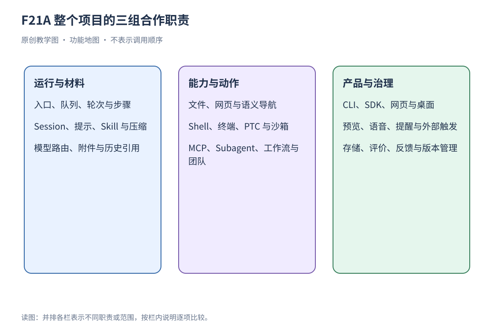
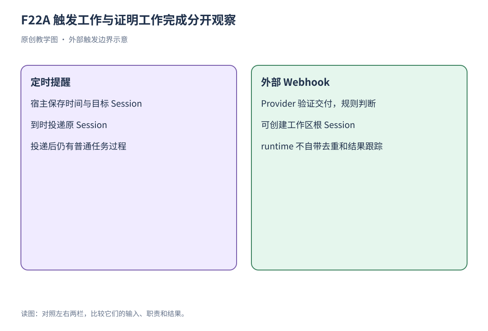
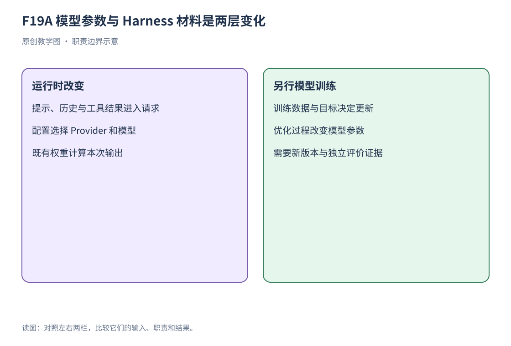
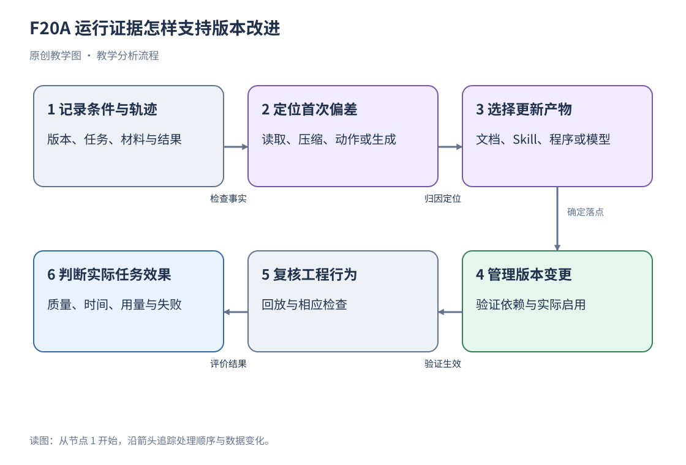

补充能力：沿同一运行主线理解其余子系统
本附录沿材料、存储、执行环境、产品和运行治理五条线，介绍主线之外的子系统。各节说明输入、处理过程与结果，原项目文档和实现入口列在文末索引中。
各节按输入、处理和输出组织：说明材料或事件如何进入子系统，组件如何处理，以及结果如何返回 Session、工具链或客户端。通过这些接口可以把扩展能力与核心运行流程关联起来。
项目分层与子系统关系


图 F21A 并列列出运行与材料、能力与动作、产品与治理三组职责。先在图中找到某项能力，再沿下面的小节理解它与其他部件的联系。
项目可按职责划分为六层：Session 与 Agent 运行维护核心状态；模型、上下文和工具构成任务执行链；文件、进程与检索 Provider 实现外部能力；Host 接口暴露服务；Web 与桌面客户端提供用户交互；测试、计量与发布支撑版本维护。
插件体系把这些层装进同一个应用，各层仍通过明确接口协作。例如删除工作区分组只修改注册记录，用户目录由文件服务管理；模型提出命令后，工具链检查准入，进程 Provider 负责执行。
前九章研究运行与材料，第十至十五章研究装配、边界与产品，第十六至十八章研究验证和综合案例，第十九章研究 Cordis 理论。主线采用简单读取任务，使初学者先看懂闭环；补充小节再解释编辑、执行、远程环境、语音、定时与协作。读者不需要先阅读源文件，也不需要先运行项目。
附件与 Session 引用怎样变成模型材料
图片附件需要稳定的存储引用。浏览器临时 URL 依赖当前运行环境，刷新或切换进程后可能失效。附件服务校验并保存二进制对象，成功后发布不可变引用；Session 保存引用与元数据，附件 Provider 管理图片字节。恢复和 fork 通过引用复用已有对象。
图片进入模型前，附件处理链根据所选模型的尺寸与编码约束生成请求版本。附件存储负责保存图片，模型路由决定是否接受图片输入。通用文件另有暂存与提交路径，正文需要由相应读取操作展开。
Session 引用把先前对话的快照加入当前任务。Session 标识确定来源，标题用于显示。准备过程捕获当时的消息 Surface，并记录原始序号和格式版本，后续请求使用这份快照。来源 Session 继续变化时，要重新取材才能获得新增内容。文件候选补全则返回路径，正文由后续读取获取。
例如选择“昨天的调查”再问“继续总结”，框架按来源 Session 标识获取可读材料。来源不可读、预算不足、自引用或取消时，准备过程返回对应结果。材料保留来源身份，用户请求则继续沿提交入口表达本次任务要求。
材料的作用域与超长结果
作用域规定工具、提示等贡献的可见范围与资源归属。全局条目可以服务多个 Agent，Agent 专属条目限定对应身份；插件卸载按归属撤销注册，保留其他插件的贡献。作用域依靠对象身份识别，显示名称相同的对象仍可属于不同拥有者。
文件、搜索或跨 Session 引用返回过长文字时，spill 机制把完整文本交给存储 Provider，返回定位符和检索说明。工具结果可以保留首尾预览，附上全文位置。定位符有本地路径、远端地址和其他句柄等形式，消费方按对应 Provider 提供的取回方式读取。
三种处理方式改变的内容不同：spill 外置原文并提供取回入口；压缩用较短表示代替原文；截断只保留选定部分。本地 spill 保存失败时，可退回原来的内联结果，让调用方继续获得材料。
非 Session 存储：工作区和产品状态怎样保存
JSON 以文本表示对象、数组、字符串与数字等数据，SQLite 在数据库文件中管理记录。领域层组织特定业务数据，例如工作区注册或定时提醒，并通过领域 API 公开受控操作；底层文件由存储后端管理。
Session 日志保存运行事件，工作区注册和定时记录等产品数据使用领域存储。存储枢纽注册后端与数据类型，JSON 或 SQLite 后端执行介质读写。领域层声明结构与版本，业务包通过领域 API 维护相应记录。
工作区注册保存规范目录路径、标题和有序 Session 账本，并检查账本中的 Session 是否具有对应 cwd。目录身份由规范路径确定：符号链接指向同一目录时，共用对应注册关系。删除注册解除分组，用户目录、文件、实时 Session 与日志继续保留。
各领域独立选择已挂载的存储后端。后端负责一次写入，领域拥有者维护多次业务更新的顺序和恢复规则。启动所需服务缺失时返回不可用状态；空列表则表示读取成功、当前没有记录。
查询、投影和标题是三种派生用途
Session 查询提供统一的历史读取层，实时来源可用时优先读取它。全文索引帮助定位匹配记录，查询结果保留来源与观察条件；需要精确内容时，再读取对应 Session 记录。
投影将有序事件归约为可查询的业务状态，例如待办列表、计划状态、目标或团队任务板。领域包提供纯计算逻辑，Host 注册表驱动更新，并向客户端发送完整状态视图。快照携带序号，标识其对应的日志位置；客户端据此显示状态，无须重复实现领域事件的归约过程。
标题用于 Session 导航。标题服务记录所用的人类消息和 Provider，通过辅助模型请求生成短标题；这个请求独立记录自己的结果。用户修改标题更新导航资料，主体任务沿原有运行链继续推进。
恢复与迁移：旧格式怎样继续读取
持久文件格式会演进。系统先识别可读的规范 generation，再通过受支持的相邻迁移步骤转换成当前逻辑事件。只读打开在内存中使用转换结果；写打开验证结果后，在原文件旁发布新的版本文件，并保留已提交的旧 generation。
迁移转换数据表示，恢复处理运行中断后留下的状态。打开 Session 时，系统从已保存事件恢复事实，再确认写入权和继续位置；遇到未来格式或不支持的历史输入，则明确返回错误。
重新打开对话时，Session 记录恢复消息和运行事实。浏览器登录、PTY 进程和外部桌面状态保存在各自环境中，由对应 Provider 查询和管理。
文件修改、搜索与网页获取
读取与修改都经过文件服务。read 提供有限窗口，write 提交完整新内容，edit 按约束修改已有文本。工具链检查目标、执行策略与取消状态；挂载文件观察策略时，还会要求先建立当前观察，再允许相关修改。
glob 按路径模式发现文件，grep 按内容匹配查找，返回的候选帮助决定下一步读哪些文件。结果数和文字量各有上限，超量结果可经 spill 保存。LSP 用定义、引用和实现等关系提供语义导航，帮助区分文字相同而含义不同的位置。
Web 搜索接收查询，返回来源列表；网页抓取接收地址，返回 HTTP 状态与有大小上限的正文。多条查询可以拆成独立请求，由所选 Provider 执行检索。抓取收到 404 或 500 时，响应本身已经到达，但目标资源分别处于不存在或服务器错误状态。
外部网页、文件和代码注释作为带来源的材料进入请求。用户通过任务入口表达要求，工具链继续检查调用准入；材料中的命令式文字仍按其来源处理。
MCP 资源与程序化工具调用
URI（Uniform Resource Identifier，统一资源标识符）为资源提供一个可识别的地址或名称。例如一个服务器公开某份文档的标识，客户端还要发送读取请求才能得到正文。程序化工具调用的英文名称是 Programmatic Tool Calling，简称 PTC。
MCP 工具承载远端动作，MCP 资源承载远端材料。资源列表用于发现 URI，模板列表用于发现可参数化的资源入口，读取请求获取具体正文；每项请求分别检查自己的调用条件并返回结果。
程序化工具调用（PTC）通过程序组织已有工具。模型提交代码，运行时将工具绑定为异步函数入口，参数与结果按 JSON 契约跨执行环境传递。程序使用这些受控入口调用能力，Host 对象保留在宿主环境中。
在相应工具模式中，run_code 承载外层程序，嵌套调用重新进入已有工具准入与结果链。程序可以组织循环或并发，但并发安全性、上限、输出预算和取消仍受运行机制约束。程序成功、某个嵌套工具成功与整个业务任务成功分别需要判断。
普通 Tool Call 由模型逐次提出动作；PTC 在一次外层调用中，用程序组织多项动作。循环与并发可以减少模型来回组织工具的次数，程序错误与嵌套调用则增加了诊断环节。评价时，将外层请求次数、实际工具次数、用量和产物质量一起记录。
审批、权限预设与真正的执行约束
权限预设将沙箱模式和审批策略组合为便于选择的界面选项。审批决定本次操作是否允许，沙箱限制执行后的文件访问范围，两项设置分别生效。具体后端实施资源约束，并报告支持程度。
read-only 要求受限后端拒绝写入，workspace-write 允许规定根目录与临时区域，danger-full-access 绕过该文件隔离。后端以 full 或 partial 报告文件约束的实现程度。网络访问和进程可见性由各自执行环境的机制控制。
批准结果进入当前调用的准入链。取消信号阻止尚未开始或能响应取消的后续工作；已经交给浏览器、桌面或外部系统的动作，后续状态由对应服务处理。
Shell、子进程与持久终端
Shell 是解释命令文字并组织执行的程序，例如 PowerShell。argv 是交给可执行程序的一组参数值；cwd 是 current working directory，即本次工作的起始目录。PTY 是 pseudoterminal，伪终端，它为程序提供类似交互终端的输入输出环境，使后续输入能够接上同一个运行中的 shell。
Shell 工具把模型命令交给执行器；子进程服务提供更底层的创建、标准流与终止能力。Shell 请求可以省略部分选项，再由解析步骤形成明确规格；子进程规格则要求调用方显式给出参数、目录和流处理方式。直接 argv 不经过 shell 解释，与把文字交给 Bash 或 PowerShell 是不同执行入口。
一次性运行收集输出后返回；持久 PTY 保留 shell 状态，供后续输入继续使用。terminal_send 在静默或等待超时后可先返回，此时 shell 仍可能运行。终端按实际 Agent 身份检查归属，Session 记录工具交接与有界结果，进程环境保存 PTY 状态。
退出码、超时、主动取消和系统中断分别记录。例如进程捕获中断后返回 0，结果仍要保留中断事实，才能解释它为何结束。标准输出超出上限时，框架保留截断后的文本和恢复提示。具体 Provider 负责回收进程资源，并为当前执行注入 DSH_* 托管变量，以当前上下文重新建立这些变量。
远程执行与语义导航
SSH（Secure Shell）提供安全的远程通信，用于请求另一台机器执行文件或进程操作。LSP（Language Server Protocol，语言服务器协议）提供代码定义、引用等语义查询；它根据符号关系返回结果，文本匹配则依据字符内容。
SSH Provider 把文件和进程执行坐标移到远端，Harness、模型传输与 Session 存储可继续留在主机。此时 cwd、可执行文件、沙箱根和语言服务器 URI 都指向远端环境。主机路径不能默认在远端可用，配套文件与子进程 Provider 必须处于一致坐标。
SSH 传输请求，远端沙箱实施文件约束。连接断开时，框架报告尚未确认的结果；重试修改前，需要确认远端是否已经执行。远程文件预览还需要客户端资源层支持相同坐标，才能把远端文件接到 GUI。
LSP 在项目中提供定义跳转、引用查找、实现跳转与悬停等语义查询。工具选择对应语言 Provider，将面向读者的光标坐标转成协议坐标，再请求语言服务器。没有匹配 Provider 时报告不可用；查询成功但没有匹配关系时才返回空结果。
CLI、Headless、SDK 与 ACP 是不同载体
CLI（Command-Line Interface，命令行界面）接收终端中的命令与选项。SDK（Software Development Kit，软件开发工具包）给其他程序提供调用接口。Headless 指无需图形界面的运行方式；GUI（Graphical User Interface）指窗口、按钮等图形界面。ACP（Agent Client Protocol）约定客户端与 Agent 的交互协议。各入口启用哪些服务，由所选 profile 决定。
CLI 选择具名 profile，再启动共享运行机制。Web profile 提供浏览器产品；headless 承载不带 GUI 服务器的一次性运行；sdk 提供程序调用服务器；acp 提供 Agent Client Protocol 接口。sdk-minimal 使用独立的显式组合，所需能力直接写在自己的配置树中。
TypeScript SDK 与 Python SDK 都是 Harness 客户端，使用 profile 和有序 patch 表达组合。Python 运行时分发包含对应平台的 CLI，客户端经该入口调用既有循环、插件和权限机制。
这些载体复用模型、Session 和工具服务：协议传输请求并映射身份，服务执行动作，客户端观察结果。各 profile 分别选择服务集合和 HMR 设置，因此同一能力在不同入口下有各自的启用配置。
一项能力怎样从源文件成为产品
构建将源文件转换为可加载产物，发布分发选定版本。npm 是 JavaScript 生态的包管理与分发工具。原生组件依赖操作系统（OS，Operating System）和处理器架构，安装时需要选择与目标平台匹配的包。
仓库采用多包组织，每个包声明类型、服务、Provider 或消费方。构建把 TypeScript 与前端资源变成可加载产物，包依赖保证运行时找到所需模块；发布分发版本，profile 选择启用条目。仅有源文件、仅构建成功、已安装和已启用都是不同状态。
桌面发行版携带匹配的生产运行时与独立 desktop profile；npm CLI 和桌面可以共享产品数据，各自维护包与启用配置。原生扩展还按 OS 和处理器架构选择匹配版本。
工程检查覆盖类型与包边界、工具和配置目录同步、文档类型等价、应用入口分类及测试。发布流程继续完成分发、签名和安装验证，把已检查版本交付给使用者。
设置和凭据为什么分开管理
设置表单从可编辑配置字段生成，页面更新通过 profile patch 保存，消费者在实际操作时读取当前配置。普通构建期字段不会自动出现在动态表单中；多实例插件依靠各自条目 id 拥有不同命名空间。版本冲突检查防止旧页面覆盖较新的编辑。
凭据配置保存环境变量名等引用，凭据 Provider 管理实际秘密值。模型适配器在请求时解析引用，轮换后的凭据可用于下一次调用，Session 无须逐条保存旧密钥。空值按缺失处理，凭据选择遵循当前路由的配置。
配置界面显示凭据引用是否已配置、来自哪一层和是否可编辑，秘密值由凭据 Provider 解析。当前进程环境覆盖本地存储值时，Provider 按该优先级报告只读条件。模型路由在实际请求时解析所需凭据，账号登录状态另由对应 Host 管理。
浏览器界面为什么也由插件组成
Client model 维护可观察的客户端状态，UI adapter 将这些状态映射到界面，Slots 提供功能组件的插入位置。Host 发布消息事件后，客户端更新镜像状态，适配层据此驱动聊天视图重新渲染。
Host 管理服务端状态，Client model 维护镜像，UI adapter 驱动视图，Slots 组织功能组件。客户端模块系统根据包声明生成启动图并加载资源；Skill 目录则向模型公开任务方法的摘要，两类目录分别服务于客户端装配和模型上下文。
Slots 是由组件拥有的插入位置。功能插件向已声明位置注册内容，框架按数量和作用域规则组合渲染；位置未知或所有权冲突时进入错误处理。位置与类型约定让功能插件接入页面，而无须直接引用另一个功能的内部 React 组件。
Typert Remote 将业务方法暴露为类型化远程调用。请求携带端点、参数和对象标识，Host 解析对象身份与调用上下文，取消通过独立信号传递。id 是远程对象的传输标识，只有解析器成功定位对象后才能调用相应接口；解析不可用时返回错误。
Conversation 将持久事件和 Client-only 临时条目组织成聊天、轨迹等视图。视图共用事实来源，各自选择展示结构。流式生成时先显示临时内容，终结后再根据 Host 记录结算为助手消息、失败尝试或中断状态。
文件预览、右侧面板与交付卡片
文件预览面向用户展示文件内容。Office 文档包括文字、表格和演示材料，PDF 用于保留页面布局。预览转换生成可查看的页面，模型输入链生成可推理的上下文，两条路径分别处理并授权。
客户端资源模型用带协议的地址描述可读取、更新的资源。例如 Session 文件地址同时标识文件与归属范围。资源 Provider 解析地址，检查权限和可用性，再完成读取或更新，并返回相应状态。
右侧面板保存各 Session 的标签与布局，将文件、目录或产品页面停靠、分栏或浮出。恢复布局后，文件资源重新读取当前内容，内置页面则按自己的导航地址加载。
Office 预览先由消费者确认读取授权，再把有界的源文件交给转换服务形成 PDF。结果可以报告缺失字体并复用相同内容的转换；预览转换本身不创建模型工具或 Session 消息。用户看到了 Office 内容，与模型取得该内容也是两项不同观察。
present 工具记录声明交付的文件，界面据此显示产物。工作区改动摘要比较轮次前后的 Git 或文件观察快照；由实时 Host 保存的摘要随该运行实例存在。文件交付记录、改动摘要和产物检查分别提供路径、差异和质量信息。
语音、浏览器操作与电脑操作
语音识别的输入是麦克风录制的音频，输出是编辑器中的文字。浏览器拥有录音与草稿，Host Provider 转写；选区版本、Session 切换与插件释放决定迟到结果还能否插入。只有普通用户提交把最终文字放进模型任务，所以识别完成不会自动成为已经发出的用户消息。
浏览器操作 Provider 可以启动或附加浏览器。启动的浏览器归确切实时 Session，跨轮次复用，但恢复或 fork 不从日志恢复登录与页面状态；附加的外部浏览器清理时通常断开连接，外部浏览器仍由原拥有者维护。相应 Provider 为实验性且需显式启用。
电脑操作扩展支持屏幕截取与桌面交互，可通过原生 Cua Driver 或外置 MCP Provider 接入。注册服务 Provider 后，服务不会为单一 Session 独占桌面，多 Session 并发访问需引入显式锁或排队机制。屏幕截图能否进入模型上下文，取决于附件存储配额与多模态路由策略；对正在执行的桌面动作发起取消，无法回滚操作系统已经接收并执行的物理鼠标点击或键盘输入。
语音扩展把音频转成输入文字，浏览器扩展管理网页操作，电脑操作扩展管理桌面动作。三项能力分别挂载 Provider，使用各自的资源归属和生命周期。
向用户提问如何参与运行
提问工具在缺少材料或需要人工决定时提交带稳定 id 的问题集合。UI 展示选项、说明或自由文本输入，用户提交后按 id 返回答案。批准型问题依据指定答案表达同意，界面呈现与决策语义分别处理。
阻塞模式等待答案再返回；带前台超时的模式先返回 pending，并保留仍可回答的问题。稍后回答按问题身份交接给后续输入。预选项只是界面默认选择，用户实际提交后才形成答案。
不变式、反馈与遥测各提供什么证据
不变式规定数据或执行过程需要持续满足的关系，例如每项工具结果能够关联对应调用。遥测向观测系统输出运行信息。OTel 是 OpenTelemetry 的简称，提供观测数据的组织与传输机制；span 描述操作耗时及其关联。业务包决定采集内容，再使用共享通道上报。
运行时不变式检查数据或事件之间应保持的关系，例如请求材料是否能从记录重建。注册表按包与过滤条件安装检查，失败时归因到拥有包。每项检查都要对应具体、可观察的关系，才能定位问题。
消息反馈保存对某条助手消息的评价与备注，Session 反馈保存整段交互的意见。反馈作为日志事实保存，默认留在评价通道。并发编辑按版本检查，防止旧页面覆盖新反馈；任务检查另按预先规定的要求评价产物。
Session 遥测捕获选定且获授权的日志前缀，脱敏后交给后端。交接游标记录本地交接进度；崩溃、重载和重试会影响实际送达。接收方按 Session 与记录身份去重，再统计任务和事件数量。
OTel 提供共享上报通道。产品埋点显式选择产品事件，Session 上报另有采集策略和队列；Web 与桌面各自配置采集。理解观测链时，先查业务包选了哪些数据，再追踪它们如何进入上报服务。
评价记录可以同时包含日志、遥测、用户反馈和产物检查：日志还原动作，遥测补充时间与运行状态，反馈描述用户体验，产物检查核对任务要求。将它们关联到同一个任务，才能解释一次运行的结果。
模型路由、缓存与推理选项
模型元数据描述模型能力，例如支持哪些输入、上下文容量多大。缓存保存可复用的计算结果；KV Cache 中的 K、V 分别指 Key 和 Value，是模型计算中的中间数据。Harness 准备请求材料，模型服务负责自己的缓存实现和命中判断。
模型元数据说明具体模型的上下文容量、输入模态和选项支持。reasoningEffort 是 Provider 提供的推理强度选项，适配器把界面选项映射成协议字段，按所选模型解析可用值。
重复前缀能否复用缓存，由 Provider 的缓存条件决定。压缩和配置变化会改变请求前缀；评价缓存效果时，分别记录请求内容、本地 token 估计、Provider 报告的缓存用量和实际计费类别。
多模态数据沿整条链传递：模型适配器编码并传输，UI 展示，压缩保留后续所需信息，持久化和回放保存可恢复的表示。新增一种模态时，要把这些环节一起接通，才能完成从输入到恢复的过程。
计划、待办与持续目标怎样区分
Todo 记录待办项，Goal 保存持续推进的目标，Round 表示围绕该目标的一次后续推进。Round 可以包含多个 turn 和 step，和第 3 章单个工具步骤处于不同的组织层次。
计划模式为模型增加工作指引，并把开关写入日志。用户在运行中切换时，选择先进入待生效状态，在获接纳的步骤边界记录并用于后续请求。工具调用继续经过原有准入和执行环境。
Todo 保存 Session 待办列表，工具整体替换该列表，界面显示各项状态。Goal 保存同一 Session 的持续目标和修订，消费策略组织后续 Round。目标记录说明要做什么，实时运行状态说明当前推进到了哪里。
目标修改检查修订号，后续 Round 使用连续编号并受上限约束。目标被标记为阻塞后，推进停止，等待阻塞条件解除；恢复时再按目标状态继续。
Schedule 与 Webhook：时间触发与外部事件接入
Schedule 是由宿主按时间触发的安排。Webhook 是外部系统在事件发生时向预定入口投递信息，例如某个仓库更新后通知服务。cron 用字段表达周期性时间规则；实际时刻还要结合时区解析。


图 F22A 左侧是在原 Session 到时投递的提醒，右侧是外部 Webhook 创建的工作。两种入口分别完成时间触发和外部事件接入，投递后的任务都进入普通运行流程。
Schedule 将提醒保存在独立领域存储中，并绑定目标 Session。时间规则支持带偏移量的绝对时刻，以及指定时区的每天、每周或 cron 周期。浏览器时区描述客户端当前环境，提醒时区依据规则解析；“明天九点”等自然语言需要先转换成明确的时间记录。
到时提醒投递到原 Session，未加载的 Session 也按其生命周期接收。启用定时扩展后，宿主保存提醒记录，到时执行投递，再由 Agent 处理输入。active、投递成功和任务完成分别记录在对应阶段。
Webhook 从外部系统接收已验证交付。Provider 负责身份验证，受信任规则判断是否发起工作，runtime 可在指定工作区创建普通根 Session。外部数据经过验证并不自动成为任意用户授权，预设与工作区仍由受信任规则决定。
这个 runtime 发起分派后即返回，任务继续在新 Session 中运行。持久队列、重试、去重和完成跟踪属于接入层需要组织的工作；例如相同 delivery id 再次到达时，应先查接收记录，再决定是否创建 Session。
扩展与版本治理怎样衔接
扩展系统用带版本的 Cordis 包提供 Host 或浏览器能力，并公开可查询的运行时元数据。能力注册后，作用域、依赖和生命周期决定哪些 Session 可用。动态代码交给指定 Host 与后端执行，资源访问按该执行环境的权限控制。
版本治理关联材料版本、插件版本、配置、模型选择和运行结果。类型与文档检查核对接口，回放检查固定工程过程，真实任务评价比较产物；选定版本后，再完成签名、安装和运行验证。
一次改进沿这条链推进：定位问题，修改对应产物，确认新版本在目标配置中生效，按同一任务要求比较结果，再决定采用或撤回。配置和权限决定其中哪些步骤由程序执行、哪些交给人处理。
工作流与后台 Jobs 怎样承载协作
工作流按程序规则组织多项处理，Job 记录一项后台工作的身份和状态。工作流安排启动与汇合，Jobs 管理资源、输出和取消，最终产物再按业务要求检查。
工作流先验证元数据和参数，再执行编排脚本，启动具有父 Agent 归属的子任务并收集结果。phases 为界面提供进度说明；实际启动、等待和分支顺序由脚本决定。
工作流引擎是可替换服务，当前 PTC 实现通过共享程序运行时执行脚本。脚本负责组织子任务，引擎与消费方管理 Provider 选择、Agent 数量上限、执行策略和取消。子任务状态、脚本返回值与业务产物分别记录，用于判断各阶段的结果。
后台 Jobs 统一描述长时间命令、终端与 Subagent 的身份、拥有者、状态和输出。生产方管理实际资源，运行时维护访问和生命周期记录；done 表示资源已经释放。running、stopping、completed、killed 与 failed 分别标识不同阶段或结束原因。
模型按运行期消费游标读取输出，前端按绝对字节偏移获取数据，两类游标独立推进。输出缓冲受容量限制，完成时关闭流；结果交付型任务在首次完整读取时提供产物。生产方报告资源收尾，消费方记录读取进度，分别对应停止输出、资源释放和产物交接。
后台 Jobs 让长工作在前台调用返回后继续运行，并保留所属 Session、输出读取和取消路径。Session 日志保存任务交接事实，执行环境持有进程资源；恢复时沿两条记录分别确认工作状态。
Agent Teams：共享任务板怎样与独立 Session 合作
Agent Teams 是需显式装配的实验性团队功能。Lead 是根 Session 中的协调者，teammate 是拥有独立 Session 的成员。roster 保存成员名册，task board 管理共享任务，mailbox 传递成员消息。团队共享这些有明确结构的状态，各成员仍维护自己的模型上下文。S01 列出本节实现依据。
以资料整理为例，Lead 分配 README 读取与包版本核对两个子任务，再整合结果。成员记录保存身份、描述、Provider、fresh 或 fork 的历史来源，以及 provisioning、active、failed 阶段，分别表示创建中、已可用和创建失败。成员是否正在执行任务，由对应 Session 的实时状态给出。
任务板每项任务保存身份、主题、描述、状态、revision、ownerId、blockedBy 和 writeScopes。revision 每次修改递增，旧修订进入冲突处理；ownerId 指领取者，blockedBy 列出前置任务，writeScopes 声明预期修改范围。例如总结任务依赖甲和乙的资料任务，要等前置任务符合条件后才能领取。
writeScopes 提示修改范围是否重叠。甲和乙需要写同一文件时，Lead 可以拆分职责或安排顺序，并在整合时检查冲突。成员把任务标记为 completed 后，Lead 检查返回的资料，再形成总结。
成员向 Lead 发送结果时，先提交目标与内容。邮箱检查身份、目标、队列容量和消息大小，再在根 Session 的日志事务中生成稳定 messageId，记录 queued 并等待持久化，随后执行投递。同一目标按邮箱记录顺序接收，不同目标可以独立推进。
| 阶段 | 改变了什么 | 能证明什么 |
|---|---|---|
| 根 Session 记 queued | 保存消息身份、发送者、目标和内容 | 团队已经接纳这项待投递消息 |
| 目标接纳 | 目标 Session 得到带团队来源的输入 | 输入已交接；目标未必已经完成阅读 |
| 目标记录持久化 | 确认相应 messageId 的接收事实 | 可以为送达建立持久证据 |
| 根 Session 记 delivered | 保存这一身份的送达边 | 不再把它当作待投递；不表示业务任务完成 |
| 后续结果 | 成员处理任务并返回资料 | Lead 按任务要求检查内容 |
投递时，邮箱检查目标已有的接收身份；恢复时，重新尝试未送达记录。失败消息继续保持 queued。实时目标先 flush 接收记录，再在根 Session 写入 delivered；目标未在内存中时，检查持久接收记录或走子 Session 交接。整个过程用同一 messageId 关联排队、接收和送达。
团队名册说明由谁工作，任务板组织依赖和领取，邮箱传递材料并保存送达状态。Lead 通过这些记录追踪进展、处理范围重叠，并在汇合时核对成员结果。
调整运行材料与训练模型是两层变化
模型权重是模型内部用于计算的数值参数。Harness 在一次请求中提供指令、历史和工具结果，模型按已有权重计算输出。修改 profile、Skill 正文或压缩策略，改变的是运行配置与请求材料；训练则通过优化过程更新权重。


图 F19A 左侧是运行时变化：提示、历史、工具结果和模型选择影响本次输出。右侧是模型训练：数据和训练目标进入优化过程，得到新权重版本。沿左右两栏，可以确定一次改动落在请求材料还是模型参数上。
例如把 Skill 中“读取项目”改成“读取 README 并注明行范围”，更新的是材料版本；更换模型路由，更新的是模型选择；另行训练并生成新权重，才是模型参数更新。三类改动分别保存版本，再用相同任务评价结果。
一次改进怎样形成可核对的证据


图 F20A 展示用运行证据改进版本的过程：记录条件和轨迹，定位首次偏差，选择更新产物，确认新版本启用，再检查工程行为和实际任务结果。例如读取范围丢失时，先修改结果表达或 Skill 指引，再检查同一任务的总结。
假设旧回答把十行读取结果说成整个 README，日志确认 read 只返回十行。修订应让工具结果保留行范围，并让总结按实际材料表述。随后用相同任务检查新结果；比较时间与用量时，同时记录模型、输入和配置。
将 Session 事件、工具结果、回放、反馈与产物检查关联起来，就能沿任务追踪改动的效果，并为采用新版本提供依据。